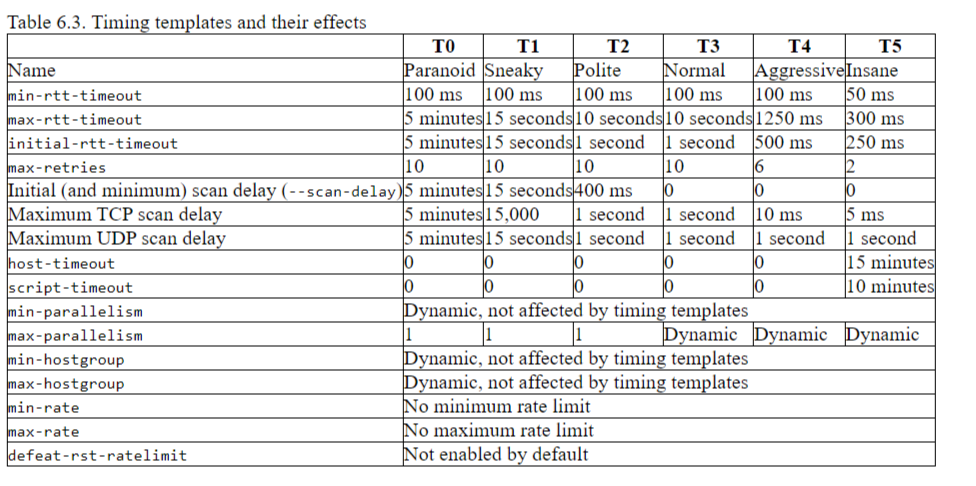
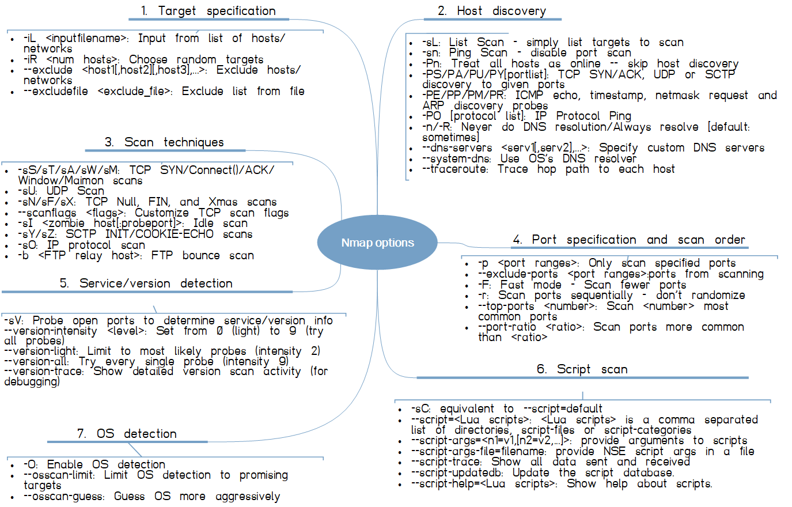
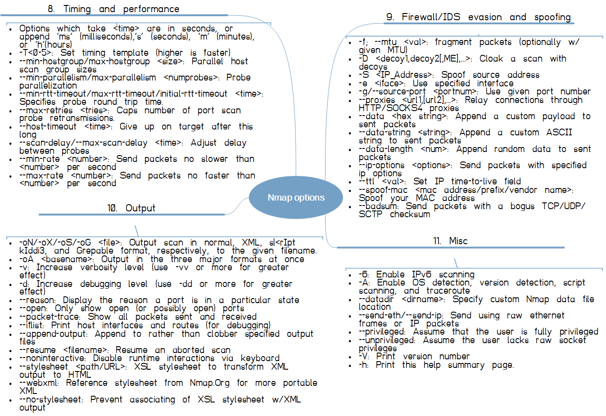

Discovery scan
nmap -sn 192.168.4.1/24 -oX discovered.xml
Enumeration scan
nmap --script="targets-xml" --script-args="newtargets,iX=discovered.xml" -sSU -T4 -oA output --top-ports 20
nmap --script=dns-zone-transfer.nse --script-args=newtargets,dns-zone-transfer.domain=discworld.io,dns-zone-transfer.server=192.168.4.42,dns-zone-transfer.addall -sSU -T4 -oA output --top-ports 20
nmap --script=firewalk --traceroute 192.168.4.40
nmap --script=http-fetch --script-args=destination=/tmp/mirror 192.168.4.40
nmap --script=http-fetch --script-args='paths={/robots.txt,/favicon.ico}' 192.168.4.40
nmap --script=http-fetch --script-args='paths=.html' 192.168.4.40
nmap --script=http-fetch --script-args='url=/images,paths={.jpg,.png,.gif}' 192.168.4.40
nmap --script=dns-zone-transfer.nse --script-args=dns-zone-transfer.domain=discworld.io,dns-zone-transfer.server=192.168.4.42
nmap --script=dns-brute.nse --script-args=dns-brute.domain=discworld.io,dns-brute.threads=6,dns-brute.hostlist=/usr/share/wordlists/amass/deepmagic.com_top500prefixes.txt,newtargets -sS -p 80
nmap -sV --script=banner 192.168.4.42
nmap -Pn --script=ip-forwarding --script-args=target=google.com 192.168.4.42
nmap --script ip-geolocation-ipinfodb --script-args ip-geolocation-ipinfodb.apikey=<API_key> 192.168.4.42
nmap -sV --script=http-enum 192.168.4.32
nmap -sV --script=vulners 192.168.4.32


Standard Nmap Scripting Engine functions. This module contains various handy functions that are too small to justify modules of their own.
Utility functions to add new discovered targets to Nmap scan queue
and the reason why the newtargets --script-args option is important
Helper functions for NSE script output
These functions are useful for ensuring output is consistently ordered between scans and following conventions for output formatting.
Functions for building short portrules.
Since portrules are mostly the same for many scripts, this module provides functions for the most common tests.
Common communication functions for network discovery tasks like banner grabbing and data exchange.
The functions in this module return values appropriate for use with exception handling via nmap.new_try.
Functions for vulnerability management.
The vulnerabilities library may be used by scripts to report and store vulnerabilities in a common format.
Functions for proxy testing.
Facilities for manipulating raw packets.
Base64 encoding and decoding. Follows RFC 4648.
Library methods for handling JSON data. It handles JSON encoding and decoding according to RFC 4627.
Zlib compression and decompression library
URI parsing, composition, and relative URL resolution.
Username/password database library.
The usernames and passwords functions return multiple values for use with exception handling via nmap.new_try. The first value is the Boolean success indicator, the second value is the closure.
A library providing functions for collecting SSL certificates and storing them in the host-based registry.